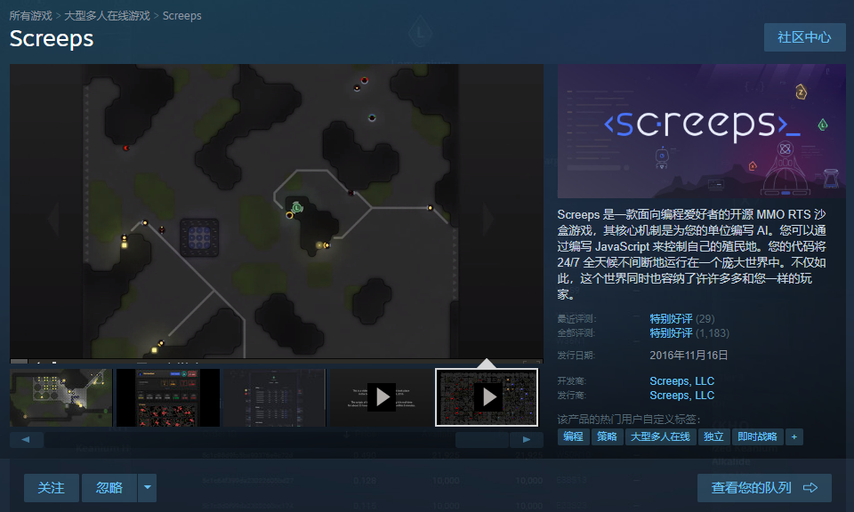
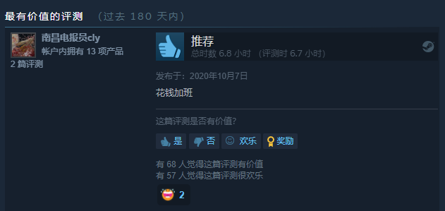

[screeps]程序员休闲养虫

游戏介绍
官方介绍 Screeps 是一款面向编程爱好者的开源 MMO RTS 沙盒游戏，其核心机制是为您的单位编写 AI。您可以通过编写 JavaScript 来控制自己的殖民地。您的代码将 24/7 全天候不间断地运行在一个庞大世界中。不仅如此，这个世界同时也容纳了许许多多和您一样的玩家。
- 游戏规则/API文档 硬核，这个游戏竟然要看API文档玩。好在有大神翻译了文档，我们可以看中文的 游戏规则：https://screeps-cn.github.io/index.html 这篇文档中介绍了游戏中的元素，这就是游戏规则，可以过完教程，没事的时候通读 API文档：https://screeps-cn.github.io/api/ 这是API文档，当你用到的时候再读
- 那么这么一款能提高代码/设计/统筹能力，让程序员下班也在自愿改bug，又不需要这么长定语的游戏在哪里可以玩的到呢？
steam商店搜索《screep》，售价¥ 65

这游戏适合我嘛？
游戏提供了网页版的Demo，里面有教程/模拟房间可以自己试玩感受一下自己能否入坑这款游戏 可以打开官网找到入口，或者点击这个链接 demo 游戏是用代码编写一套规则控制你的单位按照游戏规则探索这个游戏的世界。代码：你要具备基本的代码能力，最好是JavaScript，最起码能明白这个游戏的教程在干些什么，自己可以控制自己的单位；规则：你要有一定的规划管理能力，设计一套规则让你的creeps社会按照你的规则有序进行，并且繁荣昌盛，可不是一件容易的事 #玩点
- 制定合理的运营策略 采集/建造/升级/维修/防御，是一个基地运营下去的基本要素，合理分配资源到这些点上，才不会让你的基地随随便便风一刮就凉凉。游戏后期，可以占领多个房间，不同的房间之间的联系，资源/兵力支援，也是一个挑战。
- 简单有效的命令/社会规则 打个比方，“靠右行”，我们只需要思考，右手在哪，那条路是右手边，走就是了，简单的一句话，解决了道路的拥堵问题。并且在游戏中偶尔会感到，哎，这个规则好像与我们现实社会有一些相似点，一点一点尝试理解社会规则，我觉得这是最吸引我的点。
- 与敌人的攻防战 兵马未动，粮草先行。不论是进攻方做战单位医疗兵的配合，后勤资源的跟进；还是防守方的资源调配，攻其不备反击制敌，都够你写一阵代码的。。。
感受
我玩了大概5个小时入门，基地因为运营不当崩盘了2次，教程会教你基本的运营操作，更高深的还要自己亲身感受改进你的运营方案。我玩是这样的流程：1.改方案-->2.代码实现-->3.挂机等反馈-->1
游戏的规则像是一款RTS游戏，但是一点都不考验操作，在不同的环境下做正确的决策，才可以让你的基地越来越强大。而且，请放心，你代码能力应该是跟不上你的奇思妙想，有很多妙招等着你去实现。